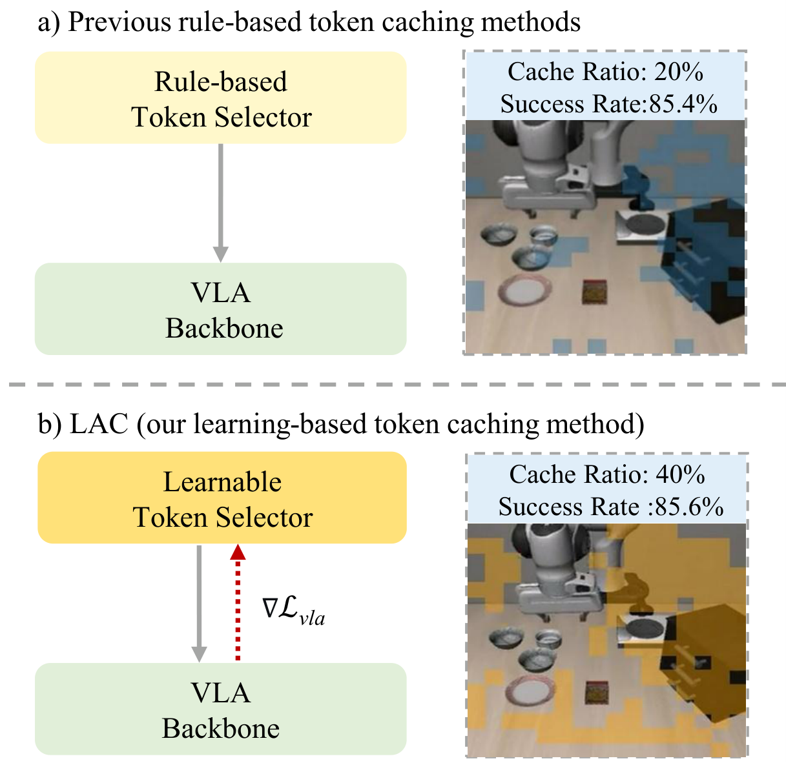
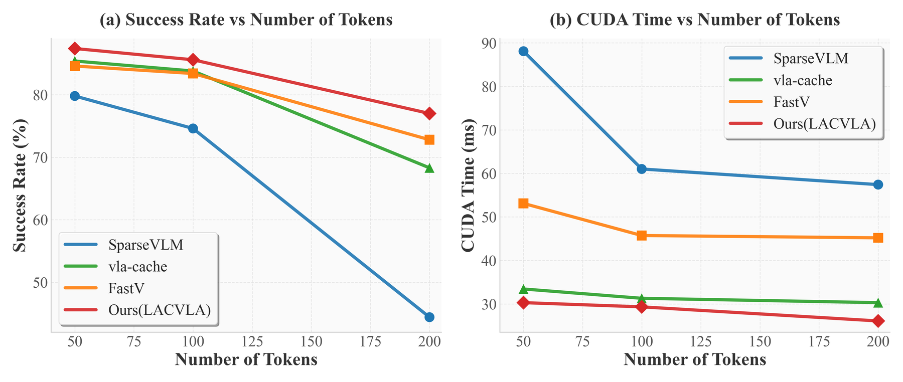

能拿到的是：跨帧视觉 KV 复用的「选择器」不再靠阈值——一个小 CNN 直接在任务损失下学习哪些 token 值得重算，并且顺带把精度拉高了（LIBERO 75.0%→76.9%）。代价是：必须能对 VLA 反传动作损失、必须有一张 attention map 做热启动、每帧多一次光流前向。
- 最小可复用件
- 「逐 token saliency CNN + 场景级缓存预算分类器」这一对模块，以及它们插进 decoder 的三条改造（保留位置编码 / rotary 只作用于重算 token / 逐层 KV 局部更新）。
- 主要风险
- Stage I 依赖 VLA 的 attention map 做监督；光流在高速自运动、模糊、低纹理场景下退化（作者在附录 A 自陈）；两阶段训练把「免训练加速器」变成「需要训练的新组件」。
- 复现门槛
- 需要能跑 task-loss 微调（真机实验用 LoRA 微调 OpenVLA）、一小段 in-domain rollout 数据、RAFT-small 权重；论文未公开 λ、比例集合 R、温度 τ、precover 的具体取值，这几项要自己扫。
1 核心摘要
这篇要解决的问题是 VLA 在闭环控制里的固定浪费：每一帧都把整幅图像重新编码一遍，而相邻帧之间大部分像素根本没动。已有做法（token 剪枝、token 合并、跨帧 KV 缓存）都用手工规则决定「哪些 token 可以省掉」，论文的判断是这类规则与任务目标脱钩——原文的说法是 “where the model attends is not necessarily what the task requires”：注意力高的地方不一定对当前动作有用，注意力低但静止的目标物却可能在两步之后就成为交互对象。
LAC 的做法是把这件事写成策略学习问题，引入两个轻量模块，二者都吃同一个「运动感知输入」Vt = [It; Ot]，其中 It 是当前帧、Ot 是 RAFT-small 估出的光流：
- Cached Token Selector：一个小 CNN，输出与视觉 token 网格对齐的逐 token saliency
St = {st(i)} ∈ [0,1]N；分数高 = 必须重算，分数低 = 可以从缓存里取。 - Cache Ratio Predictor：同样吃
Vt，在离散比例集合R = {r1,…,rC}上输出 logits，选一个整体复用预算rt，再由 selector 的排序取最低分的kt = N · rt个 token 缓存。
训练分两阶段：Stage I 让 selector 用 MSE 去拟合冻结 VLA 的 attention map（Lalign）做热启动；Stage II 冻结 VLA、只训这两个模块，总目标是 Ltotal = LVLA + λLratio，其中 Lratio = −Ep̃[r] 奖励更高的缓存比例。两个离散决策（argmax 选比例、top-k 选 token）用 Gumbel-Softmax + straight-through 做「前向硬、反向软」。推理时决策全部确定性，再加一个随机恢复机制（以 precover 概率把一部分已缓存 token 强制重算）来压制长期误差累积。
判定：论文自称这是「第一个可学习的自适应缓存框架」——把缓存策略整个换成一个可训练的策略网络；就这条线目前能核到的公开工作看，这个定位站得住。收益也确实不只是速度：它在 OpenVLA / LIBERO 上同时拿到 75.0%→76.9% 的平均成功率、1.76× 墙钟加速、FLOPs 降 25.3%。但它换来的是「必须训练」，并且仍然是相邻控制步之间的短时 KV 复用，不做跨 episode 的事件记忆。
相对 VLA-Cache 的增量：VLA-Cache 用三条固定启发式——patch 像素余弦相似度提名静态候选、text-to-vision 注意力剔除任务相关 token、按层注意力熵给每层分配复用率。LAC 把前两条合并成一个端到端学习的打分函数（不再用像素相似度，改用光流 + 学习到的 saliency），把第三条换成场景级的学习型预算预测器，并且放弃了层自适应：所有层共用同一个 token mask。所以它不是 VLA-Cache 的超集，而是把「判定信号」整体替换掉。
2 复用机制定位
主命中「复用候选」与「失效判定」：这两个环节在这篇里被合并成同一个学习问题——selector 打分决定谁进缓存、谁失效重算，predictor 决定整体预算，两者都直接由 ∇LVLA 塑形，而不是由相似度阈值或注意力熵塑形。部分命中「层与预算」：预算这一维做到了自适应（这是论文的核心贡献之一），但层这一维没有策略——附录 B 只说每层 KV 各自按同一个 mask 做局部更新，没有像 VLA-Cache 那样逐层给不同复用率。部分命中「动作接口」：它对 action head 是无关的（自回归的 OpenVLA 与 diffusion head 的 CogAct 都跑通了），但没有改造动作表示，加速收益集中在每步第一个 action token 的 prefill 上。
| 维度 | LAC 的做法 | 备注 / 与 VLA-Cache 的差异 |
|---|---|---|
| 判定信号 | 学习到的逐 token saliency（CNN，输入 [It;Ot]）+ 学习到的场景级比例 logits；训练期梯度来自 LVLA，Stage I 用 VLA attention map 做 MSE 热启动 | VLA-Cache 用「像素余弦相似度 → 注意力剔除 → 层熵」三段固定规则；LAC 用光流替代像素相似度，用任务梯度替代启发式 |
| 复用单位 | 视觉 token 级，二值 mask Mt ∈ {0,1}N，与视觉编码器 token 网格一一对应；N 由 backbone 决定（本文未报告具体数值；按 OpenVLA 的常规配置约为每帧 256） | 不是 patch 级、不是层级；同一个 mask 施加到所有 decoder 层 |
| 失效与重算 | 局部失效：每个 token 独立判定，没有「整帧失效」的全局事件；额外用一个随机恢复机制（概率 precover）把一部分缓存 token 强制重算，防止误差跨步累积 | 无显式事件边界；对场景突变的响应是隐式的——比例预测器会在动态场景下调低缓存比例 |
| 层级策略 | 无层自适应。附录 B：第 l 层的 KV 按 {Ktl,Vtl} 局部覆盖、其余沿用 {Kt−1l,Vt−1l}；attention mask 收窄到 active token 集合 | VLA-Cache 逐层设 αl；LAC 把自由度让给了 token 维与场景维 |
| 在线性 | 因果（只用当前帧与上一帧）。每步额外开销 = 一次 RAFT-small + 两次小 CNN 前向，与 Transformer 层数无关。需离线两阶段训练；推理期无随机性（决策确定性），但缓存比例逐帧可变，故延迟本身可变 | 不需要对数几率等解码期信号，不引入额外自回归前向 |
一句话概括定位：它回答的是「用什么信号决定重算」——答案是「学出来的、以任务损失为监督的 saliency」；缓存粒度是 token 而非 patch 或层；失效是逐 token 的局部失效，配合一个随机兜底。
3 问题与动机
3.1 VLA-Cache 这类启发式具体在哪里坏掉
论文对既有方法的批评落在一个很具体的点上：规则选择器的监督信号是代理量（proxy），而不是任务成功率。展开成三条可检验的失效路径：
- 像素相似度会把「即将被操作的目标物」判成可复用。目标物在抓取前几帧是静止的，像素完全不变，于是被划进复用集合；等机械臂伸过去需要它的细粒度视觉更新时，缓存里存的还是几帧前的旧表征。论文用 Figure 3 的可视化说明这一点：规则方法之所以缓存左侧篮子，只是因为它一开始是静止的；正文接着叙述这种「省掉关键更新」导致机械臂最终卡在篮子边缘、无法完成放置。
- 注意力不是任务相关性。注意力分数反映的是模型「在看哪里」，而动作需要的是「哪里会改变下一步的状态」。两者在静态背景、视觉干扰物上系统性错位。
- 固定预算无法适应场景变化。VLA-Cache 的复用率由层注意力熵推出，是全局的、与当前帧运动强度无关的量；静态场景本可以更激进，动态场景本应更保守，但规则给不出这个调节。

原图：作者 LaTeX 源码 figures/fig1.pdf（矢量原图，对应正文 Figure 1），300 dpi 渲染。上 (a)：规则 selector 与 VLA 之间没有梯度回路，只能保守地停在 20% 缓存比例 / 85.4% 成功率；下 (b)：学习型 selector 接受 ∇LVLA 回传，可以推到 40% 缓存比例 / 85.6% 成功率。右侧两张掩码图为同一场景示意。论文未说明该对照所用的 suite 与 trial 数，宜当作定性证据而非基准数字。
3.2 本文假设
论文的假设写得很直白：最优策略应当按场景运动与任务需求分配算力——复用冗余信息，只重算最显著的部分；而这个策略不该手工设计，应当直接在任务成功率上优化。三个设计选择都从这条假设推出来：
- 用光流而不是语言做条件，因为语言引导要一个足够大的编码器才能把指令对齐到像素，这笔开销与「加速」的目标直接冲突（附录 D.3 的对照：把光流换成轻量语言条件模块，成功率从 85.6% 掉到 83.0%）。
- 用两个模块分工而不是一个：token 级排序（相对重要性）与场景级预算（绝对数量）是两种不同粒度的决策，混在一个输出里不好训。
- 用两阶段训练而不是端到端从零训：离散 top-k 在稀疏监督下冷启动极不稳定（去掉 Stage I 掉到 79.2%，见第 5 节）。
3.3 与论文点名的基线对照
| 方法 | 判定信号 | 是否训练 | 论文对它的评价 |
|---|---|---|---|
| Baseline（OpenVLA / CogAct） | 无（全量重算） | 否 | 精度上限参考；每步全量 prefill |
| FastV | LLM 第 2 层后的注意力，固定比例剪 token | 否 | 为单图 VLM 设计，剪枝伤空间保真度；在短动作序列上收益被开销吃掉 |
| SparseVLM | 文本-视觉注意力 + 自适应稀疏率 | 否 | 论文实测 FLOPs 降但 CUDA 时间反而升（1.407 T 却 83.39 ms），说明理论上省的不等于墙钟上省 |
| VLA-Cache | 像素相似度 + text-to-vision 注意力 + 层熵 | 否 | 最相关工作；静态、规则化策略，无法适应场景动态变化 |
| LAC（本文） | 光流条件下的学习型 saliency + 学习型比例 | 是（两阶段，VLA 冻结） | — |
4 方法拆解

原图：作者 LaTeX 源码 figures/framework.pdf（矢量原图，对应正文 Figure 2），渲染为 PNG。上排 Stage I：VLA（冻结，雪花）出 attention scores，selector（可训练，火焰）出 predicted scores，两者做 MSE；下排 Stage II：selector 出 saliency 图、predictor 在 {80%,60%,…,40%} 的候选格点上选一个比例（红叉为落选、绿勾为选中），按比例取最低分 token 生成 mask，与 active tokens 一起进冻结的 VLA，梯度 ∇LVLA 沿红虚线回流更新两个模块。
4.1 输入与两个模块
方法作用在视觉 token 序列 Xt = {xt(1),…,xt(N)} 上。两个模块都不看 VLA 内部，只看一个运动感知张量：
Vt = [It; Ot]，其中 Ot 由 RAFT-small 从 (It−1, It) 估计。
Selector 是一个小 CNN fsel(·;θsel)，输出 St = fsel(Vt;θsel)，st(i) ∈ [0,1]。语义是「该 token 本步信息是否关键」，高分 → 重算，低分 → 缓存。CNN 的空间下采样率必须与 VLA 视觉编码器的 patch 网格对齐，这是实现时最容易踩的坑：输出分辨率与 N 不匹配就没法直接当 mask 用。
Predictor 是 fpred(·;θpred)，输出离散比例集合上的 logits Lt = {lt(1),…,lt(C)}，推理取 argmax 得 rt。设计意图写得很清楚：静态场景学到大比例（省得多），动态场景学到小比例（保精度）。两个模块的分工是「相对排序」与「绝对预算」解耦——selector 只负责谁比谁更重要，predictor 只负责留多少个。
论文未给出的数值：比例集合 R 的具体元素与 C 的取值、selector CNN 的通道数/参数量、RAFT-small 的输入分辨率。Figure 2 的插图把候选画成 80% / 60% / … / 40% 的递减格点，可作为一个实现起点（C=5 左右、上限 0.8–0.9、下限 0.4），但这不是论文给出的超参。
4.2 两阶段训练
Stage I：注意力对齐热启动。冻结 VLA，让 selector 去拟合 VLA 自己的注意力图：
Lalign = MSE( fsel(Vt;θsel), SVLA )
论文自己承认注意力分数「不是最优策略」，但它是「一般视觉显著性」的好代理。这一步的作用是给离散策略一个合理的初值，避免 Stage II 在稀疏监督下收敛到坏的局部解。实现上要注意 SVLA 的形状：需要把多头、多层、以及 text→vision 子矩阵聚合成一个 N 维向量（论文没说用了哪几层、怎么聚合，未确认）。
Stage II：联合优化。VLA 继续冻结，只训两个模块，目标是任务损失加一个「鼓励多缓存」的正则：
Ltotal = LVLA + λ Lratio，Lratio = −Ep̃t[r] = −Σj=1..C p̃t(j) rj
这里 p̃t 是 Gumbel-Softmax 出来的软概率。λ 是效率-精度权衡旋钮，论文未报告其取值，需要自己扫（建议从「λLratio 与 LVLA 同量级」开始，例如 λ·E[r] ≈ 0.1·LVLA）。
注意 Stage II 的一个隐含要求：LVLA 的梯度必须能穿过动作解码器回到 selector。这意味着你的 VLA 必须是可微可训的 imitation learner（CogAct 的 diffusion head 也要能反传），并且要有 in-domain 的 (观测, 动作) 数据。这是把「免训练加速器」变成「需要训练的新组件」的那一步。
4.3 可微分离散决策：硬前向、软反向
两处不可导：predictor 的 argmax、selector 的 top-k。处理方式不同：
Predictor 用 Gumbel-Softmax。加 Gumbel 噪声 gj ∼ Gumbel(0,1) 并用温度 τ 缩放：
p̃t(j) = exp((lt(j) + gj)/τ) / Σk exp((lt(k) + gk)/τ)
前向取硬 one-hot：pt = one_hot(argmaxj p̃t(j))；反向用 straight-through estimator 把梯度直接传给 p̃t。所以前向是真正的离散预算，反向是软松弛。
Selector 用陡峭 sigmoid 近似 top-k。前向用真 mask Mt（top-k 硬选），反向构造
M̃t(i) = σ( (st(i) − θk) / τs )
其中 θk 是第 kt 个 token 的分数阈值（也就是第 k 名的分数），τs 是温度。这个形式的含义是：分数远高于阈值的 token 软 mask 趋近 1、远低于的趋近 0，临界带内的 token 拿到非零梯度。τs 越小越接近硬阶跃、梯度越稀疏，论文未给取值。
为什么这个组合重要（本页分析）：这套 STE 让 selector 的梯度只依赖「分数与第 k 名阈值的相对关系」，而不需要把 k 也变成可导量——这正是它可以把「哪些」和「多少」拆成两个模块、各自用不同松弛方式的原因。实现时必须保证 θk 用 stop_gradient 或按常数处理，否则梯度会绕一圈回到预算上，两个模块的职责会互相污染。
4.4 推理：怎么无损插进现有 decoder
附录 B 给出的三条改造，是「能不能直接接进现有 decoder」的关键，比公式更值得抄：
- 位置管理。用一个内部状态数组记录哪些 token 需要重算。被缓存的 token 保留上一步的位置编码。这样 attention mask 才能被动态裁剪，把自注意力的范围收缩到 active token 集合上——省下的计算正是从这儿来的。
- 条件式 rotary。为了给当前步引入新位置信息，rotary embedding 只作用于被重算的 token；缓存 token 跳过这一步，保留之前编码好的状态。这一条与上一条配套（本页分析）：如果对缓存 token 也重新施加 RoPE，它就会拿到「当前步」的旋转相位，与它实际携带的旧内容不一致。
- 动态 KV 局部更新。第
l层：新算的 token 覆盖为{Ktl, Vtl}，被复用的 token 继承{Kt−1l, Vt−1l}。新旧条目混在同一个 KV 里仍然给出合法的注意力输出——论文的论证是 Transformer 的置换不变性：注意力可以对任意一组合法的 key-value 对计算。
论文明确说这套机制与标准自回归 KV cache 完全兼容，且主要收益来自每步第一个 action token 的生成——后续 token 本来就走增量解码，没有额外可省的开销。这句话对部署决策很重要：如果你的 VLA 已经用 action chunking 一次前向出多步动作，那 LAC 的加速空间会被摊薄，收益主要体现在 chunk 边界那一次 prefill 上。
随机恢复。每步以概率 precover 随机挑一部分「已缓存」token 强制重算。这是对抗误差累积的兜底：纯确定性复用会让某个区域的状态永久冻结在缓存里，而随机刷新保证它迟早被更新一次。消融显示这一项带来最大的单点提升（+2.2 个百分点，见第 5 节）。precover 与「一部分」的具体比例论文未给出。
4.5 开销为什么与层数无关
附录 C 把开销写成 Cpolicy ≈ O(H·W·Ccnn)：它只随输入图像分辨率线性增长，与 Transformer 深度 L 和序列长度 N 都无关，而且每帧只算一次。对比 backbone：每层 Cbase ≈ 4ND2 + 2N2D + 2NDM，LAC 把它替换为 Clac ≈ 4NactD2 + 2(Nact·N)D + 2NactDM（Nact = (1−ρ)N）。关键结构信息：投影与 FFN 只对 active token 算，但注意力的 K/V 侧仍是全长 N——active query 要 attend 到 active + cached 的全部上下文。所以随着层数增加，policy 开销的相对占比是单调下降的；这也是为什么深 backbone（OpenVLA 的 Llama-7B）上这笔开销可以忽略，而浅模型上要重新算账。
5 证据与实验
协议。三套评测，两套 backbone：LIBERO 用官方 OpenVLA 权重（每 suite 10 个子任务，多次 trial 平均）；SIMPLER 用 CogAct（Google 机械臂，4 个任务，Visual Matching 与 Variant Aggregation 两种设置）；真机用 Franka + LoRA 微调的 OpenVLA，4 个任务。指标是成功率、FLOPs（理论）、CUDA time（墙钟）。论文未报告 GPU 型号、trial 次数、precover 与 λ 的取值。
5.1 LIBERO（OpenVLA backbone）
| 方法 | Spatial | Object | Goal | Long | 平均 SR | FLOPs (T) ↓ | CUDA (ms) ↓ |
|---|---|---|---|---|---|---|---|
| Baseline (OpenVLA) | 84.4% | 86.6% | 75.6% | 53.2% | 75.0% | 1.864 | 51.91 |
| SparseVLM | 79.8% | 67.0% | 72.6% | 39.4% | 64.7% | 1.407 | 83.39 |
| FastV | 83.4% | 84.0% | 74.2% | 51.6% | 73.3% | 1.864 | 53.28 |
| VLA-Cache | 83.8% | 85.8% | 76.4% | 52.8% | 74.7% | 1.355 | 31.83 |
| LAC | 85.6% | 86.2% | 76.6% | 59.2% | 76.9% | 1.392 | 29.51 |
论文自报的读法是：平均 +1.9 个百分点（75.0%→76.9%）、1.76× 墙钟加速（51.91 ms→29.51 ms）、FLOPs −25.3%（1.864→1.392 T）。四个 suite 里增益分布很不均：LIBERO-Long 53.2%→59.2%（+6.0）贡献了几乎全部平均提升，Spatial +1.2、Goal +1.0，而 Object 反而略降（86.6%→86.2%，−0.4）。这与「长程任务里静态背景占比更大、复用收益更高」的解释相符，但也说明提升并不均匀。

原图：作者 LaTeX 源码 figures/visualization.pdf（矢量原图，对应正文 Figure 3），渲染为 PNG。上排 VLA-Cache：掩码在整段轨迹里几乎不变，左侧白色篮子全程被橙色覆盖（= 被缓存）；下排 LAC：中间一行是学习到的 token saliency（高亮稳定落在夹爪上），下排掩码里篮子保持原色（= 每步重算）、只有背景被橙色缓存，绿色块为随机恢复的 token。这正是「规则方法省了不该省的东西」的可视证据。
横向比较的口径提醒。这张表里 VLA-Cache 的 74.7% / 1.355 T / 31.83 ms 是本文作者在同一 OpenVLA 权重、同一套 LIBERO 协议下重跑的结果（与 VLA-Cache 自己报告的 74.7% 吻合），因此 LAC 76.9% vs 74.7% 这组对比在本文内部是成立的。但两点必须注意：其一，LAC 的 FLOPs（1.392 T）其实高于 VLA-Cache（1.355 T），墙钟只快约 1.08×（29.51 vs 31.83 ms），主要增量在成功率而不在速度；其二，跨论文比较（例如拿 LAC 的 SIMPLER 数字去比 VLA-Cache 的 LIBERO 数字）无效，因为 backbone 与任务集不同。
5.2 SIMPLER（CogAct backbone）
| 设置 / 方法 | PickCan | MoveNear | Drawer | DrawerApple | 平均 SR | FLOPs (T) ↓ | CUDA (ms) ↓ |
|---|---|---|---|---|---|---|---|
| Visual Matching · CogAct | 91.3% | 85.0% | 71.8% | 50.9% | 74.8% | 1.847 | 54.29 |
| Visual Matching · VLA-Cache | 92.0% | 83.3% | 70.5% | 51.6% | 74.4% | 1.496 | 39.63 |
| Visual Matching · LAC | 92.3% | 84.2% | 72.7% | 52.8% | 75.5% | 1.511 | 37.82 |
| Variant Aggregation · CogAct | 89.6% | 80.8% | 28.3% | 46.6% | 61.3% | 1.807 | 53.54 |
| Variant Aggregation · VLA-Cache | 91.7% | 79.3% | 32.5% | 45.8% | 62.3% | 1.493 | 39.11 |
| Variant Aggregation · LAC | 92.1% | 81.5% | 31.2% | 47.1% | 63.0% | 1.506 | 37.90 |
这组实验的意义不在绝对分数，而在架构无关性：CogAct 的动作头是 diffusion-based，与 OpenVLA 的自回归离散动作完全不同，LAC 仍能接上并获益（VM 74.8%→75.5%，VA 61.3%→63.0%）。论文自报的是两种设置的合并口径：FLOPs 降 17.4%（1.827→1.509 T），加速 1.42×（53.92→37.86 ms）。
5.3 真机（Franka + LoRA 微调的 OpenVLA）
| 方法 | KnockCrisp | PickMango | CoverBanana | KnockBottle | 平均 SR | FLOPs (T) ↓ | CUDA (ms) ↓ |
|---|---|---|---|---|---|---|---|
| Baseline (OpenVLA) | 48.0% | 16.0% | 24.0% | 44.0% | 33.0% | 1.893 | 37.38 |
| VLA-Cache | 48.0% | 12.0% | 20.0% | 40.0% | 30.0% | 1.534 | 33.36 |
| LAC | 52.0% | 12.0% | 24.0% | 64.0% | 38.0% | 1.569 | 32.47 |
论文自报平均 +5.0 个百分点（33.0%→38.0%）。注意这组数字要谨慎读：VLA-Cache 在真机上反而掉到 30.0%（低于 baseline），而 LAC 的提升几乎全部来自 KnockBottle 一个任务（44.0%→64.0%）；PickMango 上两者都比 baseline 差。真机的 baseline CUDA time（37.38 ms）也明显低于 LIBERO 的 51.91 ms，说明两套实验的观测分辨率或动作步数不同，两套数字不可混用。此外所有成功率都是 4 的倍数，暗示单任务试验次数较少（25 或 50 次，论文未报告），单任务 1 次翻转就是 2–4 个百分点，方差不可忽略。
5.4 消融
| 变体 | 成功率 | FLOPs (T) ↓ | CUDA (ms) ↓ | 读法 |
|---|---|---|---|---|
| Selector only | 82.20% | 1.283 | 28.48 | 只学「哪些」，已经比同类剪枝基线稳 |
| + Reuse Predictor | 83.40% (+1.2) | 1.325 | 29.04 | 预算自适应会在关键时刻主动降缓存比例，用一点速度换精度 |
| + Recovery（完整） | 85.60% (+2.2) | 1.377 | 29.32 | 随机刷新是单项收益最大的一步 |
| w/o Stage I 初始化 | 79.2% | — | — | 冷启动失败：热启动值 6.4 个百分点（对应 Table 5） |
| 语言引导替代光流 | 83.0% | — | — | 轻量语言条件模块容量不够，做不好指令-像素对齐 |
消融的成功率是对着 LIBERO-Spatial 的 85.6% 读的（与主表 Spatial 列一致）；论文表格未显式标注 suite 与 trial 数。另有一处小的数字不一致值得记下：Table 2 的完整模型写 FLOPs 1.377 T / 29.32 ms，Table 1 的 LAC 写 1.392 T / 29.51 ms，差值约 1%，论文未解释。

原图：作者源码 figures/libero_curve.png（作者提供的位图原图，对应正文 Figure 4），此处等比缩放。左：LIBERO-Spatial 成功率；右：CUDA 推理时间；横轴为 Number of Tokens。读图值：横轴 50→200 区间内 LAC 从约 87% 缓降到约 77%，VLA-Cache 与 FastV 约 84%→68–73%，SparseVLM 从约 80% 陡降到约 45%。
这张曲线是全文最实用的一张：它说明 LAC 的退化是平缓的，而剪枝类方法在高压缩率下是断崖式的；同时右侧曲线显示 LAC 的 CUDA 时间在所有压缩档位上都最低，证明收益是真墙钟而非理论 FLOPs。
6 优点、局限与 VLA 适配
可迁移的部分
①「一个打分 CNN + 一个预算分类器」的分工结构，可以原样搬到任何「按重要性丢弃中间计算」的场景（视觉 token、记忆槽位、事件候选）。②三条 decoder 改造（保留位置编码、rotary 只作用于重算 token、逐层 KV 局部覆盖）是任何跨帧 KV 复用方案都要处理的细节，本文给了最简可行的写法。③Stage I 的「用模型自己的注意力做热启动」是一个通用的稳定化技巧：离散策略难训时，先用一个便宜代理把分布拉近，再交给任务损失微调。④开销与层数无关这一点，让它在深 backbone 上几乎免费。
不成立的前提
①光流可信：附录 A 自陈极端视觉条件下光流精度会拖累 selector。②场景是「局部运动」主导：快速全局视觉变化或相机高速自运动时，策略会正确地选择重算大部分 token，加速收益自然消失——这不是 bug，是方法的下界。③VLA 的 attention map 可用：Stage I 需要能取出注意力图，且要自己决定怎么聚合。④可以训：需要动作损失可反传 + in-domain 数据。⑤存在「层」这一维可省：本文所有层共享一个 mask，如果某几层其实对 token 缺失更敏感，这里还留着未开采的空间。
6.1 延迟风险
账面 FLOPs 只降 25.3%，墙钟却降 43%，说明省下来的主要是访存与 kernel 启动，而非乘法。这带来两个实际后果：一是收益强依赖 batch size 与 kernel 实现，单样本低延迟场景最有利；二是 policy 开销是「每帧固定一次光流 + 两次小 CNN」，在 30 ms 的总预算里已不可忽略（按构造，消融里 selector-only 版本的 28.48 ms 已经包含 selector 与光流的开销）。若你的控制频率要求 >30 Hz，RAFT-small 可能要先换成两帧差或 backbone 自带的 patch 特征差。
还有一个反直觉的工程性质值得利用：最坏延迟有上界。动态场景下比例预测器会选低缓存比例，退化到接近全量重算，此时延迟 ≈ baseline + policy 开销，不会出现「忽快忽慢导致控制环抖动」的失控情况。相比「按剩余时间预算贪心剪枝」的做法，这对实时控制更友好。
6.2 闭环风险：缓存失效是滞后的
失效判定完全依赖光流，而光流本身是「上一帧到当前帧」的差分量。当一个静止物体即将成为交互对象时（机械臂正在接近但还没接触），光流只覆盖机械臂本身，目标物仍得低分、继续被缓存；等接触发生、目标物真的动了，才被重算——此时缓存里已经是若干步前的旧表征。论文的随机恢复机制（+2.2 个百分点，是消融里最大的一项）本质上就是在补这个滞后。本页判断：只靠视觉运动先验无法解决「即将相关但尚未运动」的失效，这也是 Gated VLA-Cache 那类用解码期置信度做兜底的方案与本文互补的原因。
6.3 换成自有 VLA 的最小改造
- 接口：在视觉 token 序列进入 LLM 之前插入
Mt ∈ {0,1}N；层内投影/FFN 只对 active token 计算，attention 的 K/V 由「新算的 + 缓存的」拼成。要求你的 decoder 能接受长度可变的 query 集合与全长 K/V（大多数 HF 实现需要改 attention mask 的构造，不能只用attention_mask的 0/1 填充语义）。 - 位置编码：若用 RoPE，缓存 token 必须跳过旋转、沿用上一步相位；若用可学习绝对位置编码，缓存 token 直接沿用旧 embedding 即可，但要注意别在拼接时重排 index。
- 光流的轻量替代：先试「相邻两帧在视觉编码器 patch 特征上的 L2 差」作为
Ot的替身（零额外网络，且天然与 token 网格对齐）；不行再上 RAFT-small。这一步同时解决「光流分辨率与 token 网格不对齐」的实现问题。 - 没有 attention map 时的 Stage I 替代：用「上一帧 KV 的 K 与当前帧新算 K 的余弦距离」当伪显著性地标签（变化大 → 高分），或直接用失败 rollout 里的人工标注。若完全跳过 Stage I，按论文的实测会掉约 6.4 个百分点，不推荐。
- 预算集合与 λ：从
C=5、r ∈ {0.9, 0.8, 0.7, 0.6, 0.5}起步（论文未给集合，这是本页建议），λ从小到大扫，验收看「成功率不掉 + 平均缓存比例上升」；precover从 0.05–0.1 起步。 - 训练成本：这是主门槛。你需要的不是「一次微调」，而是「能对动作损失求梯度的训练管线 + 与部署同分布的观测」。论文的真机实验用 LoRA 微调 OpenVLA，说明不必全参训练，但 LoRA 也要跑一遍 imitation 训练。如果只想拿加速而不想训练，这篇不适合你，应该看免训练的 VLA-Cache / TVCache 那一支。
7 落地清单
- 先量三件事再决定要不要训练：单步 prefill 的墙钟、每帧视觉 token 数
N、以及「静态 token 占比」的经验分布。若N很小（≤64）或动作已用 chunking 摊薄 prefill，LAC 的收益会低于论文的 1.76×。 - 复现 Stage I 的验收线：selector 输出与聚合后的
SVLA的 MSE 要能降到「随机猜」的 1/3 以下，且 saliency 图目视上应集中在夹爪与目标物——这是 Stage II 不发散的先决条件。 - 对齐 token 网格：selector 输出分辨率 × patch size 必须严格等于视觉编码器输入尺寸；
kt = round(N·rt)要 clamp 到[1, N−1]，避免出现全缓存（无 active token，attention 全空）或全重算（退化成 baseline）的边界。 - 三条 decoder 改造逐条验证：①缓存 token 的位置编码确实沿用上一步；②RoPE 只作用于重算 token；③逐层 KV 是局部覆盖而非整段重写。建议先做一个
r=0的等价性测试——全重算时输出应与 baseline 逐位一致；再做r=1的极端测试，观察是否只剩位置编码误差。 - 把
precover当主要旋钮：消融显示它单项贡献 +2.2 个百分点，比 predictor 更大。先用固定比例（比如所有场景都用 0.6）跑通，再加 predictor，这样能分辨掉点来自 token 选择还是预算选择。 - 验收指标：成功率不低于 baseline（论文是 +1.9 个百分点）、平均缓存比例 ≥0.4、P99 单步延迟不超过 baseline 的 1.1×（因为动态场景会退化到近似全量）。若成功率掉了但延迟收益明显，先加
precover，再降预算上限。
来源：Yujie Wei, Jiahan Fan, Jiyu Guo, Ruichen Zhen, Rui Shao, Xiu Su, Zeke Xie, Hongxun Yao, Shuo Yang, "Learning to Accelerate Vision-Language-Action Models through Adaptive Visual Token Caching", arXiv:2602.00686v2, 2026；数字取自 Table 1（LIBERO）、Table 2（组件消融）、Table 3（SIMPLER）、Table 4（真机）、Table 5（Stage I / 语言条件消融）与第 4.3 节正文，开销分析取自附录 C，推理改造取自附录 B，局限取自附录 A。
图像说明：四张图全部取自作者 arXiv LaTeX 源码（figures/fig1.pdf、figures/framework.pdf、figures/visualization.pdf、figures/libero_curve.png），矢量图按 300 dpi（宽图按适配网页宽度）渲染为 PNG，位图原样等比缩放；均为原图，未裁切、未重绘，不含页面正文、页眉页脚或排版 caption。Figure 1 对应 (a) 规则方法 vs (b) LAC 的对照；Figure 2 为两阶段方法总图；Figure 3 为 VLA-Cache 与 LAC 的缓存掩码对比；Figure 4 为复用比例扫描曲线。
相关页面：VLA-Cache · 跨控制步 KV 复用 · Gated VLA-Cache · 解码期置信度门控 · TVCache · 任务相关性重估 · 返回专题二